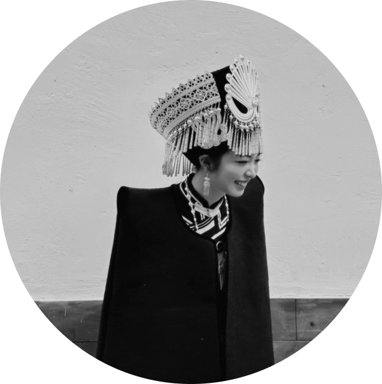

Hi! My name is Yolanda Wang from Beijing, China. Now, I am in the second year of the University of Waterloo GBDA program. On the journey of arts and design. I mainly explore photography, more specifically – black and white photography. This portfolio shows part of my black-and-white photography works between 2020 - 2024 shot in different places. I hope these photos can deliver places’ views, people, and stories.
